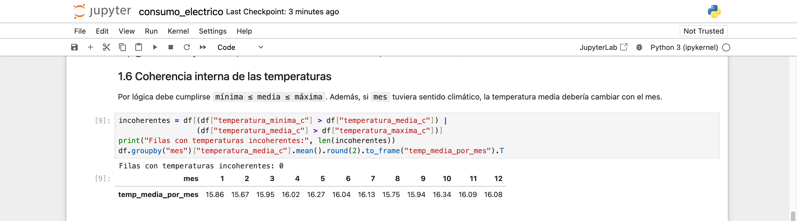
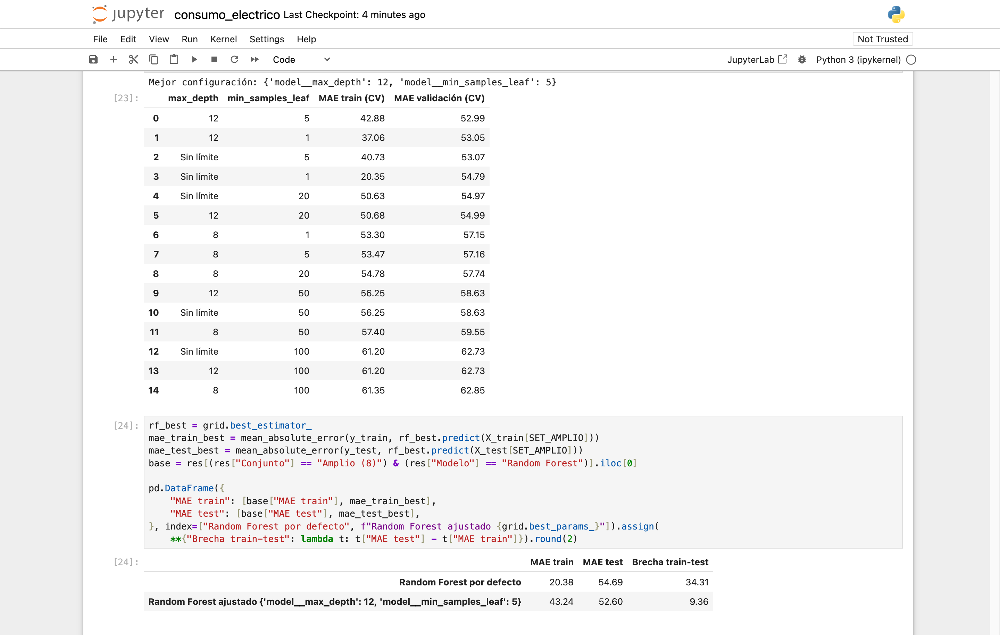
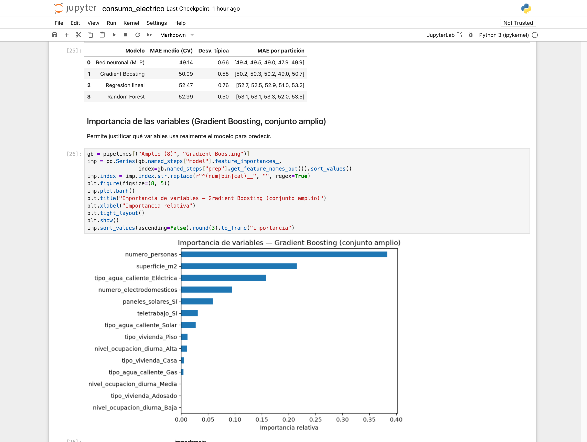

Índice
- 01Introducción04
- 1.1Objetivo04
- 1.2Metodología04
- 02Entorno de trabajo05
- 03Inspección del conjunto de datos06
- 3.1Estructura06
- 3.2Valores ausentes y duplicados06
- 3.3Rangos y coherencia07
- 3.4El mes no lleva información climática07
- 3.5Variable objetivo07
- 04Cribado de datos08
- 05Selección de variables09
- 5.1Criterios09
- 5.2Conjuntos elegidos09
- 5.3Verificación con los datos09
- 5.4Variables descartadas11
- 06Preparación de los datos11
- 6.1División en entrenamiento y test11
- 6.2Codificación de las categóricas11
- 6.3Escalado y pipeline12
- 07Modelos y métrica12
- 7.1Elección de los modelos12
- 7.2Métrica: MAE13
- 08Resultados13
- 8.1MAE por modelo y conjunto13
- 8.2Sobreajuste14
- 8.3Corrección de Random Forest15
- 8.4Validación cruzada e importancia16
- 09Respuestas a las preguntas del enunciado17
- 10Conclusiones18
- 11Bibliografía y webgrafía19
- AAnexo A. Archivos y reproducción20
- BAnexo B. Código principal20
Índice de tablas
- T01Herramientas y versiones05
- T02Valores ausentes por columna06
- T03Filas con nulos frente a completas08
- T04Variables seleccionadas09
- T05Variables descartadas11
- T06Transformación por tipo12
- T07Modelos entrenados13
- T08MAE en test13
- T09MAE en entrenamiento y test15
- T10Random Forest ajustado15
- T11Validación cruzada16
- T12Comparativa para producción18
- T13Archivos entregados20
01Introducción
Estimar cuántos kilovatios hora consume una vivienda al mes a partir de sus características, y explicar por qué un modelo lo hace mejor que otro.
1.1Objetivo
La variable a predecir, consumo_mensual_kwh, es numérica y continua, y el conjunto de datos incluye su valor real para cada vivienda. Es, por tanto, un problema de regresión supervisada: los modelos aprenden comparando sus predicciones con el consumo real.
Se entrenan cuatro algoritmos con dos conjuntos de variables (uno reducido de 5 y otro amplio de 8) y se comparan mediante el error absoluto medio (MAE) sobre viviendas que los modelos no han visto durante el entrenamiento.
1.2Metodología
Cada paso se apoya en las conclusiones del anterior:
- Inspección: conocer tipos, valores ausentes, duplicados y rangos antes de entrenar.
- Cribado: decidir qué hacer con los datos incompletos.
- Selección de variables: proponerlas con criterios lógicos y comprobarlas con los datos.
- Preparación: dividir en entrenamiento y test, codificar y escalar sin filtrar información del test.
- Entrenamiento de cuatro modelos de familias diferentes con los dos conjuntos.
- Evaluación: MAE en test, sobreajuste, ajuste de hiperparámetros y validación cruzada.
Un principio guía todo el proceso: la lógica propone y los datos verifican. Cada decisión se justifica con un razonamiento sobre el problema y después se contrasta con una medida obtenida del propio dataset.
02Entorno de trabajo
El cuaderno se desarrolló en local con JupyterLab dentro de un entorno virtual de Python. Se eligió un entorno virtual en lugar de Docker porque instala solo las librerías necesarias (unos 600 MB frente a los más de 5 GB de una imagen científica completa) y se elimina borrando una carpeta.
El mismo cuaderno, sin modificaciones, se ejecutó completo en Google Colab (Figura 01). Su primera celda imprime la fecha y la hora en la zona horaria de Madrid y el entorno de ejecución, porque los servidores de Colab trabajan en UTC.
| Herramienta | Uso en la práctica | Local | Colab |
|---|---|---|---|
| Python | Lenguaje | 3.15.2 | 3.13.18 |
| pandas | Carga, limpieza y análisis de datos | 3.1.1 | 2.2.3 |
| NumPy | Cálculo numérico | 2.5.4 | Preinstalada |
| scikit-learn | Preprocesado, modelos y métricas | 1.9.1 | Preinstalada |
| matplotlib · seaborn | Gráficos | 3.11.2 · 0.13.2 | Preinstaladas |
| JupyterLab | Desarrollo del cuaderno | 4.6.6 | Interfaz de Colab |

Origen de las capturas. La Figura 01 corresponde a la ejecución en Google Colab: la fecha y la hora aparecen tanto en el reloj del sistema (barra superior) como en la salida de la primera celda. Las capturas de resultados (Figuras 02 a 09) proceden de la ejecución local del mismo cuaderno en JupyterLab el 24/11/2026. Todas las divisiones de datos y modelos usan random_state=42, de modo que cada ejecución reproduce la misma partición y el mismo entrenamiento.
03Inspección del conjunto de datos
Antes de entrenar hay que conocer los datos: un modelo aprende de lo que recibe, incluidos sus errores. Esta fase busca los problemas que el cribado tendrá que resolver.
3.1Estructura
El archivo contiene 30.000 viviendas y 24 columnas: 12 variables numéricas, 10 categóricas, el identificador id_registro y la variable objetivo. Las categóricas son texto («Piso», «Gas»…) y scikit-learn solo trabaja con números, así que habrá que codificarlas (apartado 6.2).
3.2Valores ausentes y duplicados
Solo 61 filas (0,2 %) tienen algún valor vacío, repartidas entre 11 columnas. No hay ninguna fila duplicada, ni siquiera ignorando el identificador.
| Columna | Nulos | % del total | Columna | Nulos | % del total |
|---|---|---|---|---|---|
superficie_m2 | 3 | 0,010 | temperatura_maxima_c | 1 | 0,003 |
numero_personas | 12 | 0,040 | paneles_solares | 2 | 0,007 |
habitaciones | 13 | 0,043 | numero_electrodomesticos | 4 | 0,013 |
dias_facturacion | 20 | 0,067 | nivel_ocupacion_diurna | 1 | 0,003 |
temperatura_media_c | 9 | 0,030 | potencia_contratada_kw | 2 | 0,007 |
temperatura_minima_c | 11 | 0,037 |

3.3Rangos y coherencia
No aparecen valores imposibles: la superficie va de 30 a 284 m², el número de personas de 1 a 8 y el consumo de 118 a 1.268 kWh. En las 30.000 filas se cumple mínima ≤ media ≤ máxima para la temperatura, y las categorías no tienen erratas (no conviven, por ejemplo, «Si» y «Sí»).
3.4El mes no lleva información climática
Si el mes reflejara el clima, la temperatura media cambiaría a lo largo del año. Sin embargo, ronda los 16 °C en los doce meses (Figura 03) y en las cuatro zonas climáticas. El dataset es sintético, y eso tiene una consecuencia directa: mes y zona_climatica no aportan información sobre el clima. Si el clima influye en el consumo, lo hará a través de la temperatura.

3.5Variable objetivo
El consumo tiene forma de campana, con una media de 606 kWh (Figura 04). El diagrama de caja marca como atípicos algunos valores por debajo de 220 kWh y por encima de 1.000 kWh, pero son consumos plausibles para viviendas muy pequeñas o muy grandes, no errores de medida. Se conservan: eliminarlos haría que el modelo infravalorase sistemáticamente las viviendas de mayor consumo.

04Cribado de datos
Ante un valor vacío hay dos opciones: eliminar la fila o imputar el hueco (rellenarlo, por ejemplo, con la mediana). Eliminar filas solo introduce sesgo si las incompletas son distintas del resto: si solo faltara la superficie en las casas grandes, el modelo vería menos casas grandes de las que hay. Por eso, antes de decidir, se comparó el consumo de ambos grupos.
| Grupo | Filas | Media | Mediana | Desv. típica |
|---|---|---|---|---|
| Filas con algún nulo | 61 | 610,6 | 599,3 | 150,2 |
| Filas completas | 29.939 | 606,2 | 597,9 | 146,0 |
Decisión: eliminar las 61 filas.
- Son el 0,2 % de los datos: perderlas no reduce de forma apreciable la información.
- Su consumo es prácticamente igual al del resto (Tabla 03): los nulos se comportan como aleatorios y eliminarlos no sesga el modelo.
- Imputar obliga a inventar valores y a calcular la mediana solo con el entrenamiento para no filtrar información del test (data leakage). Con tan pocas filas no compensa.
Además se elimina id_registro, que solo identifica la fila y el enunciado prohíbe usar como predictor, y se conservan los valores atípicos del consumo (apartado 3.5). Resultado: 29.939 filas y 23 columnas, sin valores ausentes.
05Selección de variables
5.1Criterios
Cada variable candidata pasó por tres preguntas:
- ¿Cambia los kWh o solo el precio? El objetivo es energía, no dinero: la tarifa cambia lo que se paga, no lo que se consume.
- ¿Es la causa directa o un indicador? Se prefiere la causa: el aislamiento antes que la edad de la vivienda, la temperatura antes que la zona climática.
- ¿Repite información de otra variable? Una variable redundante ocupa un hueco sin aportar nada nuevo.
Después se verificaron con dos medidas: la correlación de Pearson con el consumo para las numéricas (de −1 a 1; cuanto más lejos de 0, más relación lineal) y la diferencia de consumo medio entre categorías (Δ) para las categóricas.
5.2Conjuntos elegidos
El conjunto reducido reúne las cinco variables que describen cuánta actividad hay en la vivienda: personas, espacio, aparatos y presencia en casa. El amplio añade tres sobre cómo se obtiene la energía y cómo es el edificio.
| Variable | Conjunto | Por qué afecta a los kWh | Dato |
|---|---|---|---|
numero_personas | Reducido | Más duchas, lavadoras, cocina e iluminación. | r = 0,56 |
superficie_m2 | Reducido | Más metros que iluminar y climatizar. | r = 0,42 |
numero_electrodomesticos | Reducido | Más aparatos conectados consumiendo. | r = 0,28 |
teletrabajo | Reducido | Más horas en casa con equipos encendidos. | Δ 50 kWh |
nivel_ocupacion_diurna | Reducido | La presencia de día añade consumo diurno. | Δ 35 kWh |
tipo_agua_caliente | Amplio | Con termo eléctrico toda esa energía pasa por el contador; con gas no; la solar térmica solo usa apoyo eléctrico puntual. | Δ 149 kWh |
paneles_solares | Amplio | La vivienda produce parte de su electricidad y toma menos de la red. | Δ 89 kWh |
tipo_vivienda | Amplio | Una casa tiene más fachada expuesta que un piso y pierde más calor. | Δ 41 kWh |
r = correlación de Pearson con el consumo · Δ = diferencia de consumo medio entre la categoría que más consume y la que menos.
5.3Verificación con los datos
Las variables numéricas elegidas están entre las de mayor correlación (Figura 05). Las únicas que las superan, potencia_contratada_kw y habitaciones, se descartan por redundantes (apartado 5.4). Entre las categóricas, tipo_agua_caliente es la que más separa el consumo: 665 kWh con termo eléctrico, 575 kWh con gas y 516 kWh con solar (Figura 06).

La verificación también corrigió la intuición inicial. En una casa real, la calefacción y el aire acondicionado son grandes consumidores, pero en este dataset apenas cambian el consumo medio (17 y 1 kWh de diferencia) y las temperaturas tienen una correlación de solo −0,08. Por eso no se incluyen, aunque la lógica las habría propuesto.

5.4Variables descartadas
| Variable | Criterio | Evidencia |
|---|---|---|
habitaciones | Redundante | Correlación de 0,85 con superficie_m2. |
potencia_contratada_kw | Redundante | Correlación de 0,78 con numero_personas; además es consecuencia del consumo previsto, no su causa. |
tipo_tarifa | Precio, no energía | Cambia lo que se paga, no los kWh (Δ 6 kWh). |
zona_climatica, mes | Indicador | Misma temperatura en todas las zonas y meses (Δ 7 kWh; r = −0,01). |
edad_vivienda_anios | Indicador | Aproximación del aislamiento (r = 0,05). |
| Temperaturas, calefacción, aislamiento, aire acondicionado | Sin efecto | r ≈ −0,08; Δ de 17, 5 y 1 kWh. |
dias_facturacion, anio | Efecto mínimo | r = 0,09 y −0,01. |
id_registro | Enunciado | Solo identifica la fila. |
06Preparación de los datos
6.1División en entrenamiento y test
Un modelo evaluado con los mismos datos con los que aprende puede obtener un error casi nulo memorizándolos, sin saber predecir viviendas nuevas. Es el sobreajuste (overfitting). Por eso se reservan datos que el modelo nunca ve: su error en ellos mide la capacidad real de predicción.
Siguiendo el enunciado, el 70 % (20.957 filas) se usa para entrenar y el 30 % (8.982) para evaluar, con random_state=42 para que la división sea reproducible.
6.2Codificación de las categóricas
Numerar categorías (Piso = 0, Casa = 1, Adosado = 2) haría creer al modelo que existe un orden y unas distancias que no son reales: que un adosado es «el doble» que una casa. One-Hot Encoding crea una columna de 0 y 1 por categoría, de modo que ninguna es «mayor» que otra.
| Tipo | Variables | Transformación | Motivo |
|---|---|---|---|
| Numéricas | numero_personas, superficie_m2, numero_electrodomesticos | StandardScaler | Misma escala para todas (apartado 6.3). |
| Binarias | teletrabajo, paneles_solares | 0 / 1 | Dos valores: no se inventa ningún orden. |
| Nominales | tipo_vivienda, tipo_agua_caliente | One-Hot | No hay orden entre categorías. |
| Ordinal | nivel_ocupacion_diurna | One-Hot | Tiene orden, pero el efecto no es lineal: Baja (597 kWh) y Media (596 kWh) consumen igual; solo Alta (631 kWh) sube. |
nivel_ocupacion_diurna merece explicación: al tener orden real (Baja < Media < Alta), lo habitual sería codificarla como 0, 1 y 2. Pero eso supone saltos iguales entre niveles, y los datos muestran que todo el efecto está en «Alta». Con One-Hot cada nivel recibe su propio efecto. Tras codificar, el conjunto reducido pasa de 5 variables a 7 columnas y el amplio de 8 a 14.
6.3Escalado y pipeline
La superficie va de 30 a 284 y el número de personas de 1 a 8. Sin escalar, los modelos que combinan pesos darían más importancia a la superficie solo porque sus números son mayores. StandardScaler deja cada variable numérica con media 0 y desviación típica 1. Es imprescindible para la red neuronal y facilita leer los coeficientes de la regresión lineal; a los árboles no les hace falta, pero tampoco les perjudica, así que los cuatro modelos comparten el mismo preprocesado.
El escalado y la codificación se ajustan solo con el conjunto de entrenamiento, dentro de un Pipeline que encadena preprocesado y modelo. Si la media y la desviación se calcularan con todos los datos, el modelo recibiría información del test antes de ser evaluado (data leakage) y su error parecería mejor de lo que es (código en el Anexo B).
07Modelos y métrica
7.1Elección de los modelos
Se eligieron cuatro algoritmos de familias diferentes, es decir, con formas distintas de aprender. Así la comparación permite explicar por qué uno funciona mejor que otro. Se descartó XGBoost: es de la misma familia que Gradient Boosting, daría un resultado casi idéntico y no forma parte de scikit-learn, la biblioteca del enunciado.
| Modelo | Cómo aprende | Por qué se elige | Configuración |
|---|---|---|---|
| Regresión lineal | Ajusta una fórmula consumo = b₀ + b₁·x₁ + … + bₙ·xₙ. | Referencia simple e interpretable. Si los complejos no la superan, la relación es lineal. | Por defecto |
| Random Forest | Muchos árboles en paralelo sobre muestras aleatorias; promedia sus predicciones. | Capta relaciones no lineales; promediar reduce la varianza. | 200 árboles |
| Gradient Boosting | Árboles pequeños en cadena: cada uno corrige el error de los anteriores. | De los más precisos en datos tabulares. | 100 árboles, profundidad 3 |
| Red neuronal (MLP) | Capas de neuronas que combinan las variables de forma no lineal. | Aprende relaciones complejas; contrasta con los árboles. | Capas 64 y 32, early stopping |
La red neuronal usa early stopping: reserva parte del entrenamiento como validación y se detiene cuando el error deja de mejorar, lo que evita que memorice los datos.
7.2Métrica: MAE
El error absoluto medio es el promedio de la diferencia, en valor absoluto, entre el consumo real y el predicho: MAE = (1/n) · Σ |yᵢ − ŷᵢ|. Se expresa en kWh y se interpreta directamente: un MAE de 50 significa que el modelo se equivoca de media en 50 kWh por vivienda. Al no elevar los errores al cuadrado, es menos sensible a los valores extremos que el RMSE.
Como referencia se calculó el MAE de predecir siempre el consumo medio: 115,62 kWh. Cualquier modelo útil debe quedar claramente por debajo.
08Resultados
8.1MAE por modelo y conjunto
| Modelo | Reducido (5) | Amplio (8) | Mejora (kWh) | Mejora |
|---|---|---|---|---|
| Red neuronal (MLP) | 73,80 | 49,08 | 24,73 | 33,5 % |
| Gradient Boosting | 74,16 | 50,08 | 24,09 | 32,5 % |
| Regresión lineal | 73,75 | 52,57 | 21,18 | 28,7 % |
| Random Forest | 81,52 | 54,69 | 26,83 | 32,9 % |
● Menor MAE de cada conjunto. Referencia (predecir siempre la media): 115,62 kWh.
Todos los modelos reducen a menos de la mitad el error de la referencia. Con el conjunto amplio gana la red neuronal (49,08 kWh), muy cerca de Gradient Boosting (50,08). Con el reducido, la regresión lineal y la red neuronal empatan en la práctica (73,75 y 73,80). Que el modelo más simple compita con los complejos indica que el consumo depende de las variables de forma casi lineal: cuando la relación es casi una recta, los modelos complejos tienen poco extra que descubrir.

8.2Sobreajuste
Comparar el error en entrenamiento con el de test revela si un modelo ha memorizado los datos: una brecha pequeña indica que generaliza; una grande, que ha sobreajustado.
| Conjunto | Modelo | MAE train | MAE test | Brecha | Tiempo (s) |
|---|---|---|---|---|---|
| Amplio | Red neuronal (MLP) | 48,96 | 49,08 | 0,12 | 1,28 |
| Amplio | Gradient Boosting | 48,94 | 50,08 | 1,14 | 0,79 |
| Amplio | Regresión lineal | 52,44 | 52,57 | 0,13 | 0,01 |
| Amplio | Random Forest | 20,38 | 54,69 | 34,31 | 0,68 |
| Reducido | Regresión lineal | 73,65 | 73,75 | 0,10 | 0,01 |
| Reducido | Red neuronal (MLP) | 73,67 | 73,80 | 0,13 | 0,71 |
| Reducido | Gradient Boosting | 72,81 | 74,16 | 1,36 | 0,60 |
| Reducido | Random Forest | 32,11 | 81,52 | 49,41 | 0,54 |
● Brechas que indican sobreajuste.
Random Forest sobreajusta: con el conjunto amplio se equivoca 20 kWh en entrenamiento y 55 kWh en test. Por defecto, cada árbol crece sin límite y puede acabar en hojas con una sola vivienda; entonces «predice» copiando su consumo exacto, incluido el ruido aleatorio. Gradient Boosting no sufre este problema porque usa árboles pequeños (profundidad 3), y la red neuronal tampoco, gracias a early stopping.
8.3Corrección de Random Forest
La solución es limitar la complejidad de los árboles, no reducir los datos: con menos ejemplos memorizar es todavía más fácil. Se ajustaron dos hiperparámetros:
min_samples_leaf: mínimo de viviendas por hoja. La predicción pasa a ser el promedio de varias viviendas parecidas.max_depth: máximo de preguntas encadenadas en cada árbol.
Se probaron 15 combinaciones con GridSearchCV y validación cruzada de 5 particiones sobre el entrenamiento. El test no interviene en la elección: si se usara para decidir, el modelo se adaptaría también a él y su error dejaría de ser una medida honesta.
| Configuración | MAE train | MAE test | Brecha |
|---|---|---|---|
| Por defecto · sin límite de profundidad, 1 vivienda por hoja | 20,38 | 54,69 | 34,31 |
Ajustada · max_depth=12, min_samples_leaf=5 | 43,24 | 52,60 | 9,36 |
El error de entrenamiento sube, porque memoriza menos, y el de test baja, porque generaliza mejor: la brecha pasa de 34,3 a 9,4 kWh. Aun así, Random Forest sigue por detrás de la red neuronal y de Gradient Boosting.

8.4Validación cruzada e importancia
Entre la red neuronal y Gradient Boosting hay solo 1 kWh, y una única división en entrenamiento y test podría favorecer a uno por azar. Para comprobarlo se repitió la evaluación con validación cruzada de 5 particiones: cada modelo se evalúa cinco veces, cada vez sobre una parte distinta del entrenamiento.
| Modelo | MAE medio | Desv. típica | MAE en cada partición |
|---|---|---|---|
| Red neuronal (MLP) | 49,14 | 0,66 | 49,4 · 49,5 · 49,0 · 47,9 · 49,9 |
| Gradient Boosting | 50,09 | 0,58 | 50,2 · 50,3 · 50,2 · 49,0 · 50,7 |
| Regresión lineal | 52,47 | 0,76 | 52,7 · 52,5 · 52,9 · 51,0 · 53,2 |
| Random Forest (ajustado) | 52,99 | 0,50 | 53,1 · 53,1 · 53,3 · 52,0 · 53,5 |
La red neuronal gana en las cinco particiones: la diferencia es real, no fruto del azar. Pero es pequeña, alrededor de 1 kWh sobre 50, un 2 %.
Gradient Boosting indica además cuánto ha usado cada variable (Figura 09): número de personas (38 %), superficie (22 %), agua caliente eléctrica (16 %), número de electrodomésticos (10 %) y paneles solares (6 %). El propio modelo confirma la selección del capítulo 5, incluidas las variables que se añadieron en el conjunto amplio.

09Respuestas a las preguntas del enunciado
Q1¿Qué algoritmo ha obtenido el menor MAE?
La red neuronal (MLP) con el conjunto amplio: 49,08 kWh en test (49,14 kWh de media en validación cruzada). Gradient Boosting queda a 1 kWh. Con el conjunto reducido, el menor MAE es el de la regresión lineal (73,75 kWh), prácticamente empatada con la red neuronal.
Q2¿Qué influencia ha tenido la selección de variables?
Ha sido el factor más importante. Pasar de 5 a 8 variables reduce el MAE entre un 29 % y un 34 % en los cuatro modelos, mientras que con las mismas variables elegir un algoritmo u otro cambia el error como mucho un 10 %. Las variables añadidas, sobre todo tipo_agua_caliente y paneles_solares, explican una parte del consumo que el conjunto reducido no podía ver, y ningún algoritmo compensa la falta de esa información.
La selección también decide qué modelo gana: con pocas variables basta la regresión lineal; con más, los modelos que combinan información (red neuronal y Gradient Boosting) sacan ventaja.
Q3¿Qué modelo se elegiría para producción?
Gradient Boosting con el conjunto amplio. El modelo con menor error no es necesariamente el mejor para producción: también cuentan la estabilidad, la capacidad de explicar la predicción y el riesgo de mantenimiento.
| Modelo | MAE test | ¿Se puede explicar? | Riesgo principal |
|---|---|---|---|
| Red neuronal (MLP) | 49,08 | Difícil: miles de pesos sin significado interpretable. | Muy sensible a su configuración. |
| Gradient Boosting | 50,08 | Sí: importancia de cada variable. | Bajo; estable entre particiones. |
| Regresión lineal | 52,57 | Totalmente: un coeficiente por variable. | No capta relaciones no lineales. |
| Random Forest (ajustado) | 52,60 | Sí: importancia de cada variable. | Sobreajusta si no se limita. |
● Modelo recomendado.
Gradient Boosting está a solo un 2 % del mejor error, ha sido estable en las cinco particiones y permite explicar qué variables pesan en cada predicción, algo necesario si una comercializadora debe justificar una estimación ante un cliente. La red neuronal predice algo mejor, pero es una «caja negra»: su resultado sale de miles de pesos combinados de forma no lineal, ninguno con un significado que una persona pueda interpretar, y su rendimiento depende mucho de la configuración elegida.
El tiempo de entrenamiento no decide (0,8 s frente a 1,3 s): en producción un modelo se entrena pocas veces y ambos predicen de forma instantánea.
10Conclusiones
- Elegir bien los datos vale más que elegir el algoritmo. Ampliar de 5 a 8 variables justificadas redujo el error alrededor de un 32 %; cambiar de algoritmo, como mucho un 10 %.
- La intuición propone, pero los datos deciden. La calefacción y el aire acondicionado parecían relevantes y no lo eran en este dataset; el teletrabajo y el tipo de agua caliente sí.
- Un error bajo en entrenamiento no garantiza un buen modelo. Random Forest tenía el menor error de entrenamiento y era el que peor generalizaba; limitar sus árboles redujo la brecha de 34 a 9 kWh.
- El mejor modelo para producción equilibra precisión y explicabilidad. Gradient Boosting, con un MAE de 50 kWh frente a los 116 kWh de no usar ningún modelo (un 57 % menos), es la opción recomendada.
11Bibliografía y webgrafía
- Breiman, L. (2001). Random forests. Machine Learning, 45(1), 5–32. https://doi.org/10.1023/A:1010933404324
- Friedman, J. H. (2001). Greedy function approximation: A gradient boosting machine. The Annals of Statistics, 29(5), 1189–1232. https://doi.org/10.1214/aos/1013203451
- Google. (s. f.). Google Colaboratory. Recuperado el 11 de noviembre de 2026, de https://colab.research.google.com
- pandas development team. (s. f.). pandas User Guide. Recuperado el 10 de noviembre de 2026, de https://pandas.pydata.org/docs/user_guide/
- Pedregosa, F., Varoquaux, G., Gramfort, A., Michel, V., Thirion, B., Grisel, O., … Duchesnay, É. (2011). Scikit-learn: Machine learning in Python. Journal of Machine Learning Research, 12, 2825–2830.
- scikit-learn developers. (s. f.). Common pitfalls and recommended practices. Recuperado el 10 de noviembre de 2026, de https://scikit-learn.org/stable/common_pitfalls.html
- scikit-learn developers. (s. f.). Cross-validation: evaluating estimator performance. Recuperado el 10 de noviembre de 2026, de https://scikit-learn.org/stable/modules/cross_validation.html
- scikit-learn developers. (s. f.). Supervised learning. Recuperado el 10 de noviembre de 2026, de https://scikit-learn.org/stable/supervised_learning.html
AAnexo A. Archivos y reproducción
| Archivo | Contenido |
|---|---|
consumo_electrico.ipynb | Cuaderno ejecutable con las ocho partes de la práctica, comentado. |
dataset_consumo_electrico_30000.csv | Datos de entrada proporcionados. |
memoria.pdf | Este documento. |
img/ | Capturas utilizadas en la memoria. |
Reproducir en Google Colab
- Archivo → Subir cuaderno →
consumo_electrico.ipynb. - Entorno de ejecución → Ejecutar todas.
- Cuando la celda 1.1 lo pida, subir
dataset_consumo_electrico_30000.csv.
Reproducir en local
python3 -m venv .venv source .venv/bin/activate pip install -r requirements.txt jupyter lab
BAnexo B. Código principal
Preprocesado. Construye la codificación y el escalado para cualquier lista de variables, de modo que los dos conjuntos reciben exactamente el mismo tratamiento. handle_unknown="ignore" evita errores si en producción aparece una categoría nueva.
def make_preprocessor(features): numericas = [c for c in features if c in num_cols] binarias = [c for c in features if c in BINARIAS] nominales = [c for c in features if c in cat_cols and c not in BINARIAS] return ColumnTransformer([ ("num", StandardScaler(), numericas), ("bin", OneHotEncoder(drop="if_binary"), binarias), ("cat", OneHotEncoder(handle_unknown="ignore"), nominales), ])
Entrenamiento y evaluación. Cada modelo se encadena con su preprocesado en un Pipeline. Al llamar a fit con el entrenamiento, el escalado y la codificación aprenden solo de esos datos; después se mide el MAE en entrenamiento y en test para detectar el sobreajuste.
for nombre_set, features in CONJUNTOS.items(): for nombre_modelo, modelo in make_models().items(): pipe = Pipeline([("prep", make_preprocessor(features)), ("model", modelo)]) pipe.fit(X_train[features], y_train) mae_train = mean_absolute_error(y_train, pipe.predict(X_train[features])) mae_test = mean_absolute_error(y_test, pipe.predict(X_test[features]))
Ajuste de Random Forest. GridSearchCV prueba todas las combinaciones con validación cruzada sobre el entrenamiento y se queda con la de menor MAE de validación.
grid = GridSearchCV(
rf_pipe,
param_grid={"model__min_samples_leaf": [1, 5, 20, 50, 100],
"model__max_depth": [None, 8, 12]},
scoring="neg_mean_absolute_error", cv=5,
)
grid.fit(X_train[SET_AMPLIO], y_train)